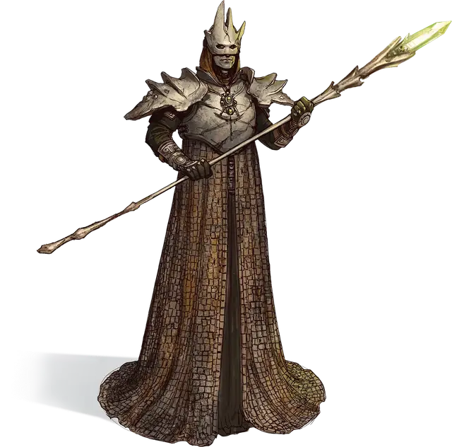

Жрец Чёрной Земли
Black Earth Priest
Средний Гуманоид (Человек), нейтрально-злой

Класс Доспеха 17 (наборный доспех)
Хиты 45 (7к8 + 14)
Скорость 30 футов
| мод | спас | ||
|---|---|---|---|
| СИЛ | 15 | +2 | +2 |
| ЛОВ | 11 | +0 | +0 |
| ТЕЛ | 14 | +2 | +2 |
| мод | спас | ||
|---|---|---|---|
| ИНТ | 12 | +1 | +1 |
| МДР | 10 | +0 | +0 |
| ХАР | 16 | +3 | +3 |
Навыки Запугивание +5, Религия +3, Убеждение +5
Чувства пассивное Восприятие 10
Языки Общий, Терран
Опасность 3 (700 опыта)
Бонус мастерства +2
Особенности
Использование заклинаний. Жрец является заклинателем 5-го уровня. Его базовой характеристикой является Харизма (Сл спасброска от заклинаний 13, +5 к атакам заклинаниями). Он знает следующие заклинания чародея:
• Заговоры (неограниченно):брызги кислоты[acid splash], защита от оружия [blade ward], свет [light], починка [mending], лепка земли [mold earth]
• 1 уровень (4 ячейки):дрожь земли[earth tremor], поспешное отступление [expeditious retreat], щит [shield]
• 2 уровень (3 ячейки):дребезги [shatter], паук [spider climb]
• 3 уровень (3 ячейки):замедление[slow]
Действия
Мультиатака. Жрец совершает две рукопашные атаки.
Глефа. Рукопашная атака оружием: +4 к попаданию, досягаемость 10 фт., одна цель. Попадание: рубящий урон 7 (1к10 + 2).
Реакции
Непоколебимость. Когда на жреца воздействует эффект, который должен передвинуть его, сбить с ног или сделать и то, и другое, он может использовать реакцию, чтобы не двигаться и устоять на ногах.
Описание
Жрецы Чёрной Земли — это движущая сила и основные организаторы культа Огремоха. Истинно уверовавшие в его божественную силу, они создали извращённую доктрину, которая объясняет, как именно злу элементальной земли суждено переделать мир и править всем вокруг. Жрецы Чёрной Земли образуют круг лидеров, чей фанатизм и познания в магии служат основной опорой культа. Хотя обладающие необычной силой одиночки и занимают более высокое положение в культе, именно жрецы обеспечивают лидерам их власть над остальными последователями Огремоха.